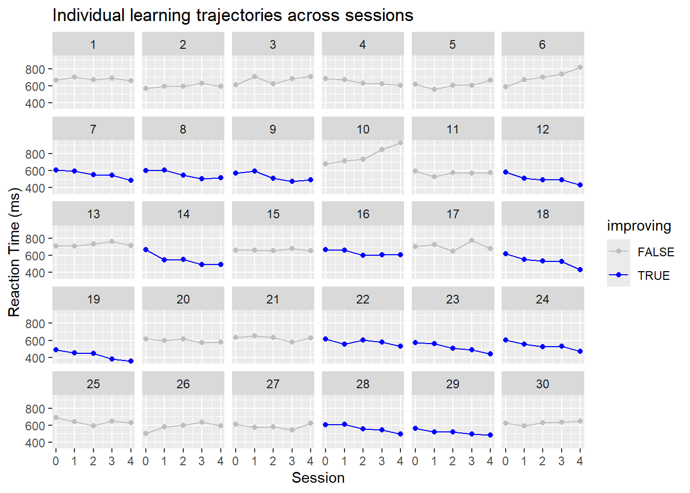
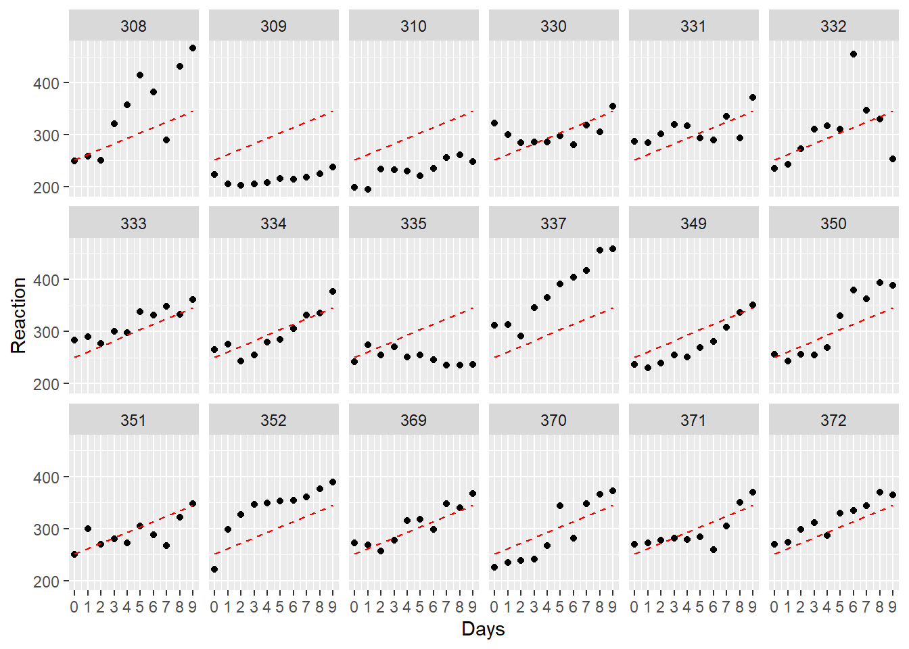
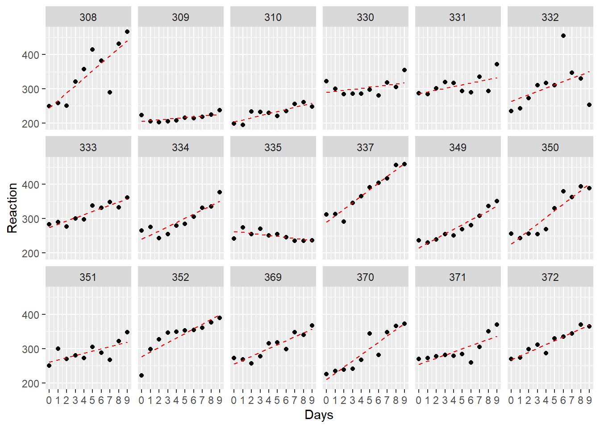
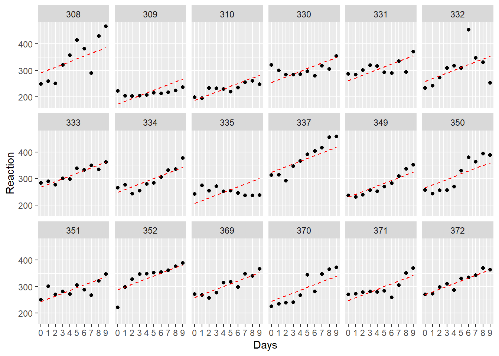
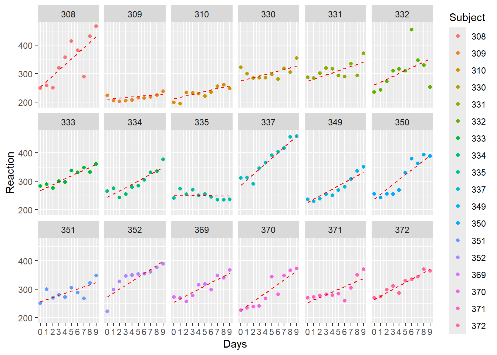

Indlæser krævet pakke: Matrix
Vedhæfter pakke: 'dplyr'De følgende objekter er maskerede fra 'package:stats':
filter, lagDe følgende objekter er maskerede fra 'package:base':
intersect, setdiff, setequal, union… and why random intercepts are often not enough

In this post, we’ll discuss why random slopes are often of special interest in health science data and biometrics. We will use lme4 and the basic tidyverse-style to do so. The data set we’ll use to demonstrate this comes from a simple simulation that mimics a common experimental design: repeated measures of reaction time across multiple sessions per participant.
Imagine we are testing whether people improve (get faster) with repeated practice. This is a typical setup in cognitive psychology. Often, researchers want to know: is there a significant learning effect over time?
But here’s the issue (SPOILER ALLERT!): if you only allow each participant to have a different starting point (a random intercept), you’re assuming everyone learns at the same rate — which is often unrealistic.
Indlæser krævet pakke: Matrix
Vedhæfter pakke: 'dplyr'De følgende objekter er maskerede fra 'package:stats':
filter, lagDe følgende objekter er maskerede fra 'package:base':
intersect, setdiff, setequal, unionWe simulate a data set where each subject completes five sessions of a task. There’s a general trend toward faster responses over time, but with subject-specific differences in both starting reaction time and learning rate.
set.seed(314)
# Parameters
n_subjects <- 30
n_sessions <- 5
# Fixed effect of session: general learning effect
beta_0 <- 600 # Average baseline RT in ms
beta_1 <- -10 # Average decrease in RT per session
# Random effects: standard deviations
sd_intercept <- 50 # SD of baseline RTs across subjects
sd_slope <- 25 # SD of learning rates (slopes)
rho <- 0.2 # Correlation between intercepts and slopes
# Within-subject residual error
sigma_error <- 30
# Construct subject-level random effects (correlated)
subject_re <- MASS::mvrnorm(
n = n_subjects,
mu = c(0, 0),
Sigma = matrix(c(sd_intercept^2, rho*sd_intercept*sd_slope,
rho*sd_intercept*sd_slope, sd_slope^2), 2)
) |>
as.data.frame() |>
setNames(c("intercept_re", "slope_re")) |>
dplyr::mutate(subject = factor(1:n_subjects))
# Create session vector repeated for each subject
session <- rep(0:(n_sessions - 1), times = n_subjects)
# Repeat subject IDs for each session
subject <- rep(subject_re$subject, each = n_sessions)
# Join the random effects
sim_data <- tibble::tibble(subject = subject, session = session) |>
dplyr::left_join(subject_re, by = "subject") |>
dplyr::mutate(
reaction_time = beta_0 + intercept_re +
(beta_1 + slope_re) * session +
rnorm(dplyr::n(), mean = 0, sd = sigma_error)
)Here’s the distribution of slopes (ie. learning rate variability):
subject_re |>
ggplot(aes(x = slope_re)) +
geom_histogram(bins = 20, fill = "#6495ED", color = "white") +
labs(title = "Distribution of subject-specific learning rates (slopes)",
x = "Subject slope (ms per session)", y = "Count") +
theme_minimal()
Here’s the structure of our data set:
dplyr::glimpse(sim_data)Rows: 150
Columns: 5
$ subject <fct> 1, 1, 1, 1, 1, 2, 2, 2, 2, 2, 3, 3, 3, 3, 3, 4, 4, 4, 4,…
$ session <int> 0, 1, 2, 3, 4, 0, 1, 2, 3, 4, 0, 1, 2, 3, 4, 0, 1, 2, 3,…
$ intercept_re <dbl> 63.50593, 63.50593, 63.50593, 63.50593, 63.50593, -38.98…
$ slope_re <dbl> 14.352662, 14.352662, 14.352662, 14.352662, 14.352662, 1…
$ reaction_time <dbl> 662.9042, 703.3984, 672.8058, 690.5320, 659.7003, 565.97…sim_data |>
ggplot(aes(y=reaction_time, x=session)) +
facet_wrap(~ subject, ncol=6) +
geom_point() +
geom_line() +
scale_x_continuous(limits=c(0, 4),breaks=c(0:4)) +
labs(x = "Session", y = "Reaction Time (ms)",
title = "Individual learning trajectories across sessions")
Generally, our sample shows the following trend:
sim_data |>
ggplot(aes(x = session, y = reaction_time)) +
geom_point(alpha = 0.3) +
geom_smooth(method = "lm", color = "firebrick", se = FALSE) +
labs(title = "Pooled average trend across all subjects",
x = "Session", y = "Reaction Time (ms)") +
theme_minimal()`geom_smooth()` using formula = 'y ~ x'
Before diving into mixed models, let’s start with a simple linear model — the kind you’d use in a basic ANOVA-style analysis. This model assumes complete pooling, meaning all subjects are treated as coming from the same population with no individual differences.
anova_approach <- lm(reaction_time ~ 1 + session, sim_data)
summary(anova_approach)
Call:
lm(formula = reaction_time ~ 1 + session, data = sim_data)
Residuals:
Min 1Q Median 3Q Max
-230.76 -53.64 -3.20 52.50 341.12
Coefficients:
Estimate Std. Error t value Pr(>|t|)
(Intercept) 614.455 12.161 50.525 <2e-16 ***
session -7.529 4.965 -1.516 0.132
---
Signif. codes: 0 '***' 0.001 '**' 0.01 '*' 0.05 '.' 0.1 ' ' 1
Residual standard error: 85.99 on 148 degrees of freedom
Multiple R-squared: 0.0153, Adjusted R-squared: 0.008646
F-statistic: 2.299 on 1 and 148 DF, p-value: 0.1316This model estimates a single intercept (baseline reaction time) and a single slope (learning rate) for everyone. It completely ignores the fact that each participant provides multiple data points.
…Here is the model prediction - notice how every participant is assumed to have the same initial value and linear trajectory. This is due to pooling, an assumption from ANOVA. …
Let’s overlay the model predictions onto each subject’s data:
sim_data |>
ggplot(aes(session, reaction_time, group=subject)) +
facet_wrap(~subject, ncol=6) +
geom_point() +
geom_line(aes(y=fitted(anova_approach)), linetype=2, color = "red") +
scale_x_continuous(limits=c(0, 4),breaks=c(0:4))
As you can see:
At first glance, you might look at this and say:
“Ah, some people are improving, others aren’t — we have responders and non-responders!”
But that interpretation would be misleading here. This model can’t tell you who is improving — it just imposes the same trend on everyone. The differences you see are purely residuals (errors), not modeled variation.
Modeling each participant separately (No pooling) To better capture individual differences, we can treat each participant as their own mini-experiment. This means fitting a separate linear regression model for each subject, without assuming any shared parameters. This is the no pooling approach — the opposite extreme of the ANOVA model.
… If we want to be more sensitive to individual variability, we need to allow participants to be modeled more individually. This can be done by computing linear regression for each participant, treating them as individual cases with no overlap. …
no_pooling <- lmList(reaction_time ~ session | subject, sim_data)
summary(no_pooling)Call:
Model: reaction_time ~ session | NULL
Data: sim_data
Coefficients:
(Intercept)
Estimate Std. Error t value Pr(>|t|)
1 681.7230 20.83618 32.71823 9.395527e-52
2 577.6282 20.83618 27.72237 7.396652e-46
3 632.6230 20.83618 30.36175 4.511656e-49
4 679.6080 20.83618 32.61672 1.216269e-51
5 578.4442 20.83618 27.76153 6.600455e-46
6 598.0607 20.83618 28.70299 4.435086e-47
7 616.0432 20.83618 29.56603 3.970179e-48
8 607.6337 20.83618 29.16243 1.218478e-47
9 581.2502 20.83618 27.89620 4.465845e-46
10 652.8119 20.83618 31.33069 3.399765e-50
11 566.5336 20.83618 27.18989 3.524528e-45
12 564.4954 20.83618 27.09208 4.707596e-45
13 715.1396 20.83618 34.32201 1.736935e-53
14 630.0177 20.83618 30.23671 6.329860e-49
15 662.4253 20.83618 31.79207 1.015997e-50
16 665.1181 20.83618 31.92130 7.262779e-51
17 708.8651 20.83618 34.02087 3.629525e-53
18 615.6480 20.83618 29.54707 4.183817e-48
19 495.4300 20.83618 23.77739 1.426033e-40
20 613.2376 20.83618 29.43138 5.763393e-48
21 643.3719 20.83618 30.87763 1.129423e-49
22 605.7133 20.83618 29.07026 1.576892e-47
23 583.3266 20.83618 27.99585 3.347891e-46
24 594.4219 20.83618 28.52835 7.279131e-47
25 661.4904 20.83618 31.74720 1.141889e-50
26 536.7667 20.83618 25.76128 2.624430e-43
27 585.9676 20.83618 28.12260 2.323417e-46
28 622.5018 20.83618 29.87600 1.692176e-48
29 551.4993 20.83618 26.46835 3.039224e-44
30 605.8404 20.83618 29.07637 1.550161e-47
session
Estimate Std. Error t value Pr(>|t|)
1 -1.92741626 8.506335 -0.226585971 8.212595e-01
2 8.42613664 8.506335 0.990571880 3.245504e-01
3 17.15000676 8.506335 2.016145140 4.676631e-02
4 -19.48394859 8.506335 -2.290522028 2.432725e-02
5 15.05841164 8.506335 1.770258395 8.007041e-02
6 52.82327204 8.506335 6.209874124 1.604886e-08
7 -28.98344395 8.506335 -3.407277354 9.828407e-04
8 -27.01429459 8.506335 -3.175785264 2.046924e-03
9 -27.21776736 8.506335 -3.199705408 1.900477e-03
10 63.03441859 8.506335 7.410290764 6.577572e-11
11 0.98436378 8.506335 0.115721252 9.081313e-01
12 -32.17990897 8.506335 -3.783051982 2.786396e-04
13 6.33994882 8.506335 0.745320814 4.580199e-01
14 -40.56637674 8.506335 -4.768960413 7.097137e-06
15 0.67470483 8.506335 0.079317920 9.369559e-01
16 -17.78312994 8.506335 -2.090574745 3.938578e-02
17 -0.29796817 8.506335 -0.035028971 9.721342e-01
18 -40.63502607 8.506335 -4.777030789 6.873853e-06
19 -34.88493879 8.506335 -4.101053765 9.003999e-05
20 -8.77430658 8.506335 -1.031502542 3.050692e-01
21 -8.86818963 8.506335 -1.042539381 2.999540e-01
22 -14.64719423 8.506335 -1.721915908 8.852003e-02
23 -34.43488446 8.506335 -4.048145632 1.090719e-04
24 -28.50260901 8.506335 -3.350750670 1.179326e-03
25 -10.96645889 8.506335 -1.289210734 2.006284e-01
26 23.05147176 8.506335 2.709918043 8.057916e-03
27 -0.07360777 8.506335 -0.008653288 9.931149e-01
28 -29.04004938 8.506335 -3.413931857 9.618532e-04
29 -17.03479502 8.506335 -2.002600913 4.822955e-02
30 9.91250594 8.506335 1.165308618 2.469733e-01
Residual standard error: 26.89939 on 90 degrees of freedomsim_data |>
ggplot(aes(session, reaction_time, group=subject)) +
facet_wrap(~subject, ncol=6) +
geom_point(alpha = 0.6) +
geom_line(aes(y = fitted(no_pooling)), color = "red", linetype = "dashed") +
labs(title = "No pooling: Separate regression for each subject",
subtitle = "Each subject gets their own intercept and slope",
x = "Days of sleep deprivation", y = "Reaction time (ms)") +
scale_x_continuous(limits=c(0, 4),breaks=c(0:4))
What does this show? Now, each subject has their own line, fitted independently from the others.
This approach fully respects subject-level variation — but at a cost.
Although no pooling gives us maximum flexibility, it also comes with trade-offs:
Key point No pooling shows us the raw heterogeneity in slopes and intercepts — but it doesn’t help us make population-level inferences or control for noise. We need something in between.
What if we want to both model individual differences and estimate a general trend across subjects?
This is where things get interesting — we’re now ready to bridge the gap between the overly simplistic (ANOVA) and the overly fragmented (no pooling) approaches.
Partial pooling with random intercepts The random intercept model is the first step toward balancing the extremes of full pooling and no pooling.
We acknowledge that subjects vary in their baseline levels (reaction times), but we still assume they share a common trend — in this case, how their reaction times change over sessions.
This is a mixed-effects model: it includes both fixed effects (shared across all subjects) and random effects (varying by subject).
RI_only <- lme4::lmer(reaction_time ~ 1 + session + (1 | subject), sim_data)
summary(RI_only)Linear mixed model fit by REML ['lmerMod']
Formula: reaction_time ~ 1 + session + (1 | subject)
Data: sim_data
REML criterion at convergence: 1639.3
Scaled residuals:
Min 1Q Median 3Q Max
-2.6679 -0.4728 -0.0547 0.4959 3.8078
Random effects:
Groups Name Variance Std.Dev.
subject (Intercept) 5402 73.50
Residual 2103 45.85
Number of obs: 150, groups: subject, 30
Fixed effects:
Estimate Std. Error t value
(Intercept) 614.455 14.904 41.229
session -7.529 2.647 -2.844
Correlation of Fixed Effects:
(Intr)
session -0.355sim_data |>
ggplot(aes(session, reaction_time, group=subject)) +
facet_wrap(~subject, ncol=6) +
geom_point(alpha = 0.6) +
geom_line(aes(y = fitted(RI_only)), color = "red", linetype = "dashed") +
labs(title = "No pooling: Separate regression for each subject",
subtitle = "Each subject gets their own intercept and slope",
x = "Days of sleep deprivation", y = "Reaction time (ms)") +
scale_x_continuous(limits=c(0, 4),breaks=c(0:4))
What does this model assume? Each subject has their own intercept (baseline reaction time),
But they all share the same learning (or fatigue) slope.
This is often better than full pooling, because it accounts for subject differences in level — but it may still be too rigid if slopes really do vary.
If some participants improve rapidly while others don’t, a fixed slope assumption can:
Underestimate uncertainty in the group trend,
Bias the estimate of the average slope,
Lead to false positives (thinking there’s a trend when it’s driven by a few outliers),
Mislead clinical interpretations — e.g. calling someone a “responder” when it’s just model misfit.
In applied biomedical and clinical research, it is common to assess whether individuals vary in their response to an intervention or over repeated measurements. A random intercept model allows for differences in baseline levels between participants but assumes that all individuals share a common rate of change (i.e., a fixed slope).
This assumption can be problematic. If individuals truly differ in their trajectories—such as some improving and others not—then forcing a single slope across all subjects may misattribute systematic variation to residual noise. This can result in biased fixed-effect estimates and inflated residual variance, especially if a small number of participants deviate substantially from the average trend.
In such cases, interpreting individual deviations from the model as evidence of “responders” or “non-responders” can be misleading. These deviations may reflect model misfit rather than genuine subject-specific effects.
Current consensus in the statistical literature supports the use of random slope models when there is theoretical or empirical justification for individual differences in change over time. These models can account for both baseline heterogeneity and subject-specific trends, offering more accurate and generalizable inference (Gelman & Hill, 2007; Barr et al., 2013).
To account for individual differences not only in baseline levels but also in rates of change, we now extend the model to include random slopes. This allows each subject to have their own intercept and their own slope with respect to session.
This model is specified as:
RI_RS_corr <- lme4::lmer(reaction_time ~ 1 + session + (session | subject), sim_data)
summary(RI_RS_corr)Linear mixed model fit by REML ['lmerMod']
Formula: reaction_time ~ 1 + session + (session | subject)
Data: sim_data
REML criterion at convergence: 1550.6
Scaled residuals:
Min 1Q Median 3Q Max
-2.06073 -0.52670 -0.00823 0.53737 2.59156
Random effects:
Groups Name Variance Std.Dev. Corr
subject (Intercept) 2090.4 45.72
session 565.9 23.79 0.30
Residual 723.6 26.90
Number of obs: 150, groups: subject, 30
Fixed effects:
Estimate Std. Error t value
(Intercept) 614.455 9.174 66.981
session -7.529 4.612 -1.632
Correlation of Fixed Effects:
(Intr)
session 0.147 This model assumes that:
By allowing for both random intercepts and random slopes, we acknowledge that participants may respond differently over time — something particularly important in biomedical and behavioral research, where inter-individual variability is the norm rather than the exception.
Let’s visualize the fitted lines from this model:
sim_data$RI_RS_fitted <- predict(RI_RS_corr)
ggplot(sim_data, aes(x = session, y = reaction_time, group = subject)) +
facet_wrap(~ subject, ncol = 6) +
geom_point(alpha = 0.6) +
geom_line(aes(y = RI_RS_fitted), color = "red", linetype = "dashed") +
labs(title = "Random intercept and random slope model",
subtitle = "Each subject has their own intercept and slope",
x = "Session", y = "Reaction Time (ms)") +
scale_x_continuous(limits = c(0, 4), breaks = 0:4) +
theme_minimal()Random slope models can:
This approach represents what is often called partial pooling: estimates are informed both by the individual subject’s data and by the group-level trend, leading to more stable and interpretable inference, especially in small to moderate samples.
We now compare two models:
One that allows subjects to differ only in their baseline level (random intercept),
And another that also allows them to differ in their rate of change over sessions (random slope).
Using the REML criterion (restricted maximum likelihood), we can assess model fit:
| Model | Model REML criterion |
|---|---|
| Random intercept only | 1639.3 |
| Random intercept + random slope | 1550.6 |
Lower REML values indicate better fit. Here, the random slope model shows a substantially lower REML, suggesting that accounting for individual variability in slopes improves model fit.
While REML values themselves aren’t interpretable in isolation, the difference in REML here (~89 points) is large enough to strongly favor the more complex model.
If we wanted to formally test whether adding random slopes improves the model, we could refit both models using maximum likelihood (ML) and then conduct a likelihood ratio test:
RI_only_ml <- lmer(reaction_time ~ session + (1 | subject), sim_data, REML = FALSE)
RI_RS_corr_ml <- lmer(reaction_time ~ session + (session | subject), sim_data, REML = FALSE)
anova(RI_only_ml, RI_RS_corr_ml)Data: sim_data
Models:
RI_only_ml: reaction_time ~ session + (1 | subject)
RI_RS_corr_ml: reaction_time ~ session + (session | subject)
npar AIC BIC logLik -2*log(L) Chisq Df Pr(>Chisq)
RI_only_ml 4 1658.1 1670.2 -825.07 1650.1
RI_RS_corr_ml 6 1573.7 1591.8 -780.85 1561.7 88.428 2 < 2.2e-16 ***
---
Signif. codes: 0 '***' 0.001 '**' 0.01 '*' 0.05 '.' 0.1 ' ' 1This test examines whether the added complexity (the subject-specific slopes) is justified by a significantly better fit.
The model with random slopes:
This supports the idea that in biomedical or behavioral data — where individual responses often differ — a random intercept-only model may be too restrictive and lead to misleading fixed-effect conclusions.
RI_only <- lme4::lmer(reaction_time ~ 1 + session + (1 | subject), sim_data)
summary(RI_only)Linear mixed model fit by REML ['lmerMod']
Formula: reaction_time ~ 1 + session + (1 | subject)
Data: sim_data
REML criterion at convergence: 1639.3
Scaled residuals:
Min 1Q Median 3Q Max
-2.6679 -0.4728 -0.0547 0.4959 3.8078
Random effects:
Groups Name Variance Std.Dev.
subject (Intercept) 5402 73.50
Residual 2103 45.85
Number of obs: 150, groups: subject, 30
Fixed effects:
Estimate Std. Error t value
(Intercept) 614.455 14.904 41.229
session -7.529 2.647 -2.844
Correlation of Fixed Effects:
(Intr)
session -0.3552 * pnorm(-1.744)[1] 0.08115909RI_RS_corr <- lme4::lmer(reaction_time ~ 1 + session + (session | subject), sim_data)
summary(RI_RS_corr)Linear mixed model fit by REML ['lmerMod']
Formula: reaction_time ~ 1 + session + (session | subject)
Data: sim_data
REML criterion at convergence: 1550.6
Scaled residuals:
Min 1Q Median 3Q Max
-2.06073 -0.52670 -0.00823 0.53737 2.59156
Random effects:
Groups Name Variance Std.Dev. Corr
subject (Intercept) 2090.4 45.72
session 565.9 23.79 0.30
Residual 723.6 26.90
Number of obs: 150, groups: subject, 30
Fixed effects:
Estimate Std. Error t value
(Intercept) 614.455 9.174 66.981
session -7.529 4.612 -1.632
Correlation of Fixed Effects:
(Intr)
session 0.147 2 * pnorm(-1.428)[1] 0.1532919This can be visualized:
sim_data |> dplyr::mutate(improving = slope_re < 0) |>
ggplot(aes(y=reaction_time, x=session, color = improving)) +
scale_color_manual(values = c("TRUE" = "blue", "FALSE" = "gray")) +
facet_wrap(~ subject, ncol=6) +
geom_point() +
geom_line() +
scale_x_continuous(limits=c(0, 4),breaks=c(0:4)) +
labs(x = "Session", y = "Reaction Time (ms)",
title = "Individual learning trajectories across sessions")
sleepstudy |>
ggplot(aes(y=Reaction, x=Days)) +
facet_wrap(~ Subject, ncol=6) +
geom_point() +
geom_line() +
scale_x_continuous(limits=c(0, 9),breaks=c(0:9))anova_approach <- lm(Reaction ~ 1 + Days, sleepstudy)
summary(anova_approach)
Call:
lm(formula = Reaction ~ 1 + Days, data = sleepstudy)
Residuals:
Min 1Q Median 3Q Max
-110.848 -27.483 1.546 26.142 139.953
Coefficients:
Estimate Std. Error t value Pr(>|t|)
(Intercept) 251.405 6.610 38.033 < 2e-16 ***
Days 10.467 1.238 8.454 9.89e-15 ***
---
Signif. codes: 0 '***' 0.001 '**' 0.01 '*' 0.05 '.' 0.1 ' ' 1
Residual standard error: 47.71 on 178 degrees of freedom
Multiple R-squared: 0.2865, Adjusted R-squared: 0.2825
F-statistic: 71.46 on 1 and 178 DF, p-value: 9.894e-15Here is the model prediction - notice how every participant is assumed to have the same initial value and linear trajectory. This is due to pooling, an assumption from ANOVA.
ggplot(sleepstudy, aes(Days, Reaction, group=Subject)) +
facet_wrap(~Subject, ncol=6) +
geom_point() +
geom_line(aes(y=fitted(anova_approach)), linetype=2, color = "red") +
scale_x_continuous(limits=c(0, 9),breaks=c(0:9))
If we want to be more sensitive to individual variability, we need to allow participants to be modeled more individually. This can be done by computing linear regression for each participant, treating them as individual cases with no overlap.
no_pooling <- lmList(Reaction ~ Days | Subject, sleepstudy)
summary(no_pooling)Call:
Model: Reaction ~ Days | NULL
Data: sleepstudy
Coefficients:
(Intercept)
Estimate Std. Error t value Pr(>|t|)
308 244.1927 15.04169 16.23439 2.419368e-34
309 205.0549 15.04169 13.63244 1.067180e-27
310 203.4842 15.04169 13.52802 1.993900e-27
330 289.6851 15.04169 19.25882 1.122068e-41
331 285.7390 15.04169 18.99647 4.646933e-41
332 264.2516 15.04169 17.56795 1.236403e-37
333 275.0191 15.04169 18.28379 2.303436e-39
334 240.1629 15.04169 15.96649 1.135574e-33
335 263.0347 15.04169 17.48705 1.946826e-37
337 290.1041 15.04169 19.28667 9.653936e-42
349 215.1118 15.04169 14.30104 1.983389e-29
350 225.8346 15.04169 15.01391 2.939145e-31
351 261.1470 15.04169 17.36155 3.943049e-37
352 276.3721 15.04169 18.37374 1.402577e-39
369 254.9681 15.04169 16.95077 4.023936e-36
370 210.4491 15.04169 13.99106 1.253782e-28
371 253.6360 15.04169 16.86221 6.656453e-36
372 267.0448 15.04169 17.75365 4.373979e-38
Days
Estimate Std. Error t value Pr(>|t|)
308 21.764702 2.817566 7.7246464 1.741840e-12
309 2.261785 2.817566 0.8027444 4.234454e-01
310 6.114899 2.817566 2.1702769 3.162541e-02
330 3.008073 2.817566 1.0676139 2.874813e-01
331 5.266019 2.817566 1.8689956 6.365457e-02
332 9.566768 2.817566 3.3954013 8.857738e-04
333 9.142045 2.817566 3.2446604 1.462120e-03
334 12.253141 2.817566 4.3488388 2.574673e-05
335 -2.881034 2.817566 -1.0225257 3.082469e-01
337 19.025974 2.817566 6.7526272 3.315759e-10
349 13.493933 2.817566 4.7892159 4.115160e-06
350 19.504017 2.817566 6.9222924 1.356856e-10
351 6.433498 2.817566 2.2833528 2.387301e-02
352 13.566549 2.817566 4.8149886 3.683105e-06
369 11.348109 2.817566 4.0276282 9.081880e-05
370 18.056151 2.817566 6.4084212 1.964766e-09
371 9.188445 2.817566 3.2611283 1.385338e-03
372 11.298073 2.817566 4.0098697 9.718197e-05
Residual standard error: 25.59182 on 144 degrees of freedomggplot(sleepstudy, aes(Days, Reaction, group=Subject)) +
facet_wrap(~Subject, ncol=6) +
geom_point() +
geom_line(aes(y=fitted(no_pooling)), linetype=2, color = "red") +
scale_x_continuous(limits=c(0, 9),breaks=c(0:9))
We can relax the assumption of pooling by allowing each participant to have their own intercept.
RI_only <- lmer(Reaction ~ 1 + Days + (1 | Subject), sleepstudy)
summary(RI_only)Linear mixed model fit by REML ['lmerMod']
Formula: Reaction ~ 1 + Days + (1 | Subject)
Data: sleepstudy
REML criterion at convergence: 1786.5
Scaled residuals:
Min 1Q Median 3Q Max
-3.2257 -0.5529 0.0109 0.5188 4.2506
Random effects:
Groups Name Variance Std.Dev.
Subject (Intercept) 1378.2 37.12
Residual 960.5 30.99
Number of obs: 180, groups: Subject, 18
Fixed effects:
Estimate Std. Error t value
(Intercept) 251.4051 9.7467 25.79
Days 10.4673 0.8042 13.02
Correlation of Fixed Effects:
(Intr)
Days -0.371Note the fixed effect 10.4673 / 0.8042 = 13.0157921
ggplot(sleepstudy, aes(Days, Reaction, group=Subject)) +
facet_wrap(~Subject, ncol=6) +
geom_point() +
geom_line(aes(y=fitted(RI_only)), linetype=2, color = "red") +
scale_x_continuous(limits=c(0, 9),breaks=c(0:9))
RI_RS_corr <- lmer(Reaction ~ 1 + Days + (1 + Days | Subject), sleepstudy)
summary(RI_RS_corr)Linear mixed model fit by REML ['lmerMod']
Formula: Reaction ~ 1 + Days + (1 + Days | Subject)
Data: sleepstudy
REML criterion at convergence: 1743.6
Scaled residuals:
Min 1Q Median 3Q Max
-3.9536 -0.4634 0.0231 0.4634 5.1793
Random effects:
Groups Name Variance Std.Dev. Corr
Subject (Intercept) 612.10 24.741
Days 35.07 5.922 0.07
Residual 654.94 25.592
Number of obs: 180, groups: Subject, 18
Fixed effects:
Estimate Std. Error t value
(Intercept) 251.405 6.825 36.838
Days 10.467 1.546 6.771
Correlation of Fixed Effects:
(Intr)
Days -0.138Note the fixed effect 10.467 / 1.546 = 6.7703752
ggplot(sleepstudy, aes(Days, Reaction, group=Subject, colour=Subject)) +
facet_wrap(~Subject, ncol=6) +
geom_point() +
geom_line(aes(y=fitted(RI_RS_corr)), linetype=2, color = "red") +
scale_x_continuous(limits=c(0, 9),breaks=c(0:9))
ggplot(sleepstudy, aes(Days, Reaction, group=Subject)) +
facet_wrap(~Subject, ncol=6) +
geom_point() +
geom_line(aes(y=fitted(anova_approach)), linetype=2, color = "red") +
geom_line(aes(y=fitted(no_pooling)), linetype=2, color = "green") +
geom_line(aes(y=fitted(RI_only)), linetype=2, color = "blue") +
geom_line(aes(y=fitted(RI_RS_corr)), linetype=2, color = "black") +
scale_x_continuous(limits=c(0, 9),breaks=c(0:9))